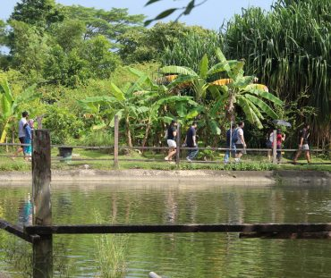

BOLLYWOOD FARMS PTE LTD
A paradise on earth!
Set in the rustic environment of the northwest Kranji Countryside, visiting it is a step back to Singapore’s lush history. Our location provides a great opportunity to see a fresh side of the island, rejuvenate your senses, connect with family, and enjoy the simple pleasures of real food!

Quick Search
| Poison Ivy Bistro | ||
ACTIVITIES
Discovery Harvesting
The Discovery Harvest is a treasure hunt where teams will be given a list of plants to harvest. This harvesting portion of the activity is limited to 30 minutes, and all teams must return to the game master within 30 minutes. The winning team will receive a prize after scores are tallied! This activity will require teamwork, speed and strategy.
For rates and booking, click here.
Guided farm tour
The Bollywood farm tour is led by experienced guides who will share some interesting facts about plants we have in Bollywood Veggies and their uses. Visitors will be given the opportunity to touch, smell and taste some of the vegetables and fruits, herbs and spices, and medicinal plants. The guide will also introduce methods of sustainable and planet friendly farming. This farm tour is suitable for both adults and/or children, and is best experienced with the potting class. On request, we can accommodate tours on specific themes like herbs and spices, vegetables, fruits and medicinal plants.

Indoor culinary classes
Want an immersive farm to table culinary experience? Join our culinary facilitators and learn how to prepare a themed 3-course meal. Our range of culinary classes include farm to table (using primarily local ingredients), Peranakan, Indian and other local cuisines, regional cuisines, fusion and vegetarian/vegan and other menus. Examples of past classes include Balinese, Javanese, Peranakan, tempeh-based, lei-cha, Japanese temple cooking, Nasi Ulam, bread making with pesto and hummus, and more! We will be glad to accommodate any customised themes you may have in mind. Participants will be able to feast on their creations!

Paddy planting
A hands-on activity where participants will be equipped with the knowledge of rice farming. Our guide will explain the uses of this important staple food, and participants will have the chance to get their hands dirty by learning to plant the paddy. A fun-filled educational activity especially suitable for older students and adults.

Poison Ivy Bistro
Poison Ivy bistro takes farm-to-table food back down to earth with its wholesome and hearty cooking style and cheap and cheerful prices. We also use our fresh produce for value-added farm products such as banana bread, tapioca and sweet potato chips, sambal and kaya!

ala-carte menu is seasonal and changes often for you to enjoy the freshest food!
What More?
Mindfulness session

Outdoor culinary challenge

Scrabble shamble

Yoga classes

Breadmaking and farm fun

Pot a plant

Bollywood Kampung race

Terrarium making

Art with nature

Insect house making

And Many More!
Map of Bolly Veggies

CONTACT US
Opening Hours:
Thursday – Friday
Farm : 7am to 5pm
Bistro: 7.30am – 5pm
(last order 4pm for kitchen)
Saturday – Sunday
Farm : 7am to 7pm
Bistro: 7.30am – 7pm
(last order 4pm for kitchen; last order 6pm for drinks and deserts)
* Closed unless Public Holiday
For Reservations, please Whatsapp +65 8138 5637, contact us at +65 68985001